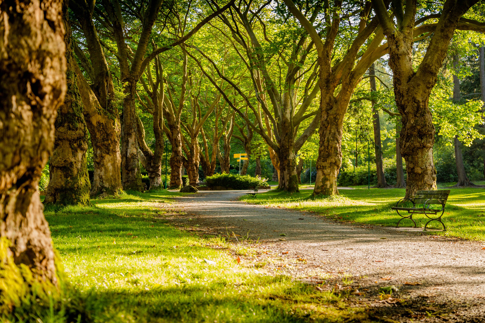
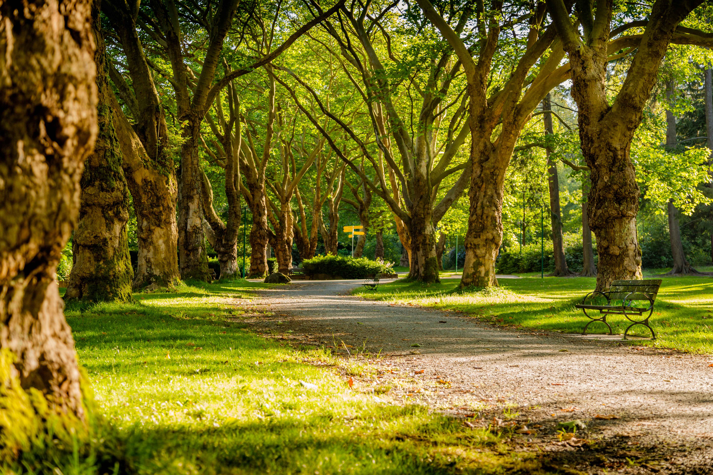
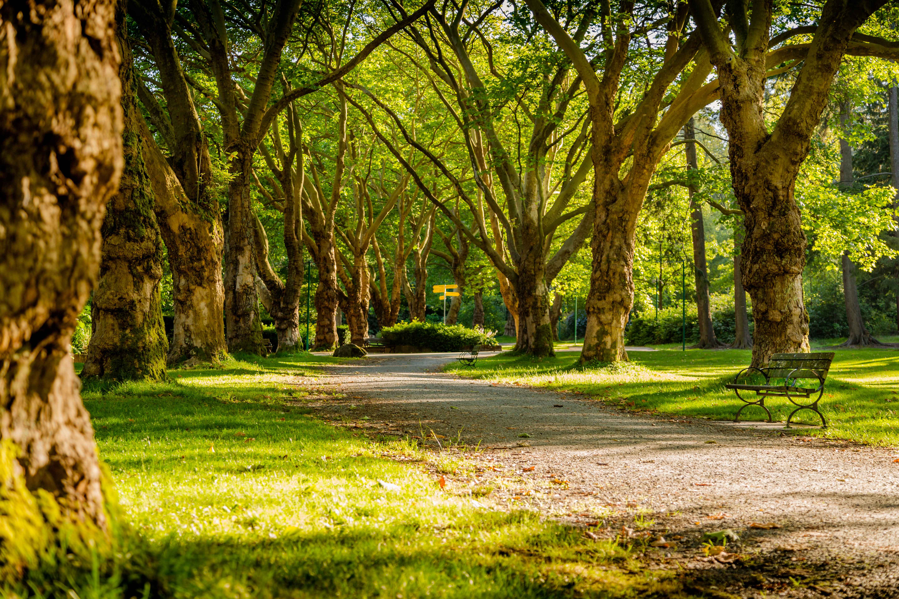

Walks and Park
 

We have some beautiful walks around our centre, as well as our very own heritage centre park with picnic benches. The best way to experience it though is to come see for yourself.

We have some beautiful walks around our centre, as well as our very own heritage centre park with picnic benches. The best way to experience it though is to come see for yourself.